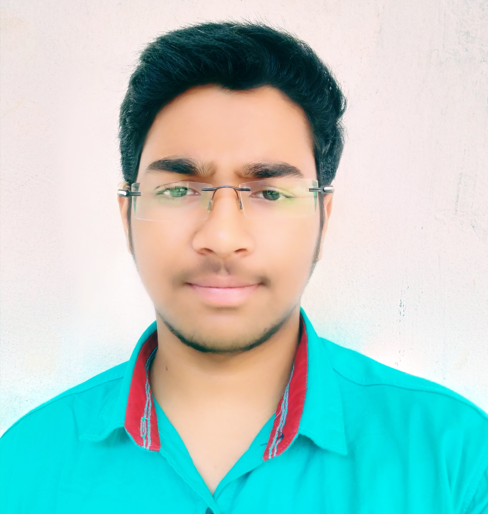

SELF DETAILS:
Hi, this is midhun. I am from patwarigudem,badradri kothagudem district,Telangana state. My father's name is meeraiah and my mother's name is mareswari.My father is a business man and my mother is housewife. I have a sibling,He is my younger brother. His name is Srinivas. Presently, He is studying intermdiate 1st year in bhashyam gorantla campus.
HOBBIES:
Playing drums, Listening to music, surfing through Internet, Playing video games, Singing.
ACADEMIC DETAILS:
| S.NO |
Name of the institution |
class |
Grade |
| 1 |
Bhashyam Blooms |
Tenth |
8.67 |
| 2 |
Bhashyam Gorantla |
INTERMIDIATE 1ST YEAR |
10.00 |
| 3 |
Bhashyam Gorantla |
INTERMIDIATE 2ST YEAR |
9.67 |
| 4 |
JNTUK-UCEV |
B.TECH 1ST YEAR |
NILL |
SKILLS:
- Complete Python Basics
- Complete C Language
- Basics of html
- Complete OOPS concepts
- Complete c++ Language
- Basics of Digital logic Design
GOALS:
My goal is to become an web developer. My short term goal is to get a good rank in GATE examination.
EXPERIANCE:
Although i didn't have much experience, I have got a lot of skills that might help you within the projects that you want to assign me like designing your website on front end.
|